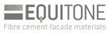
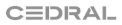
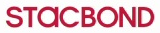
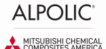
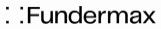
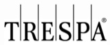
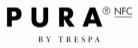
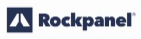
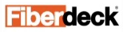
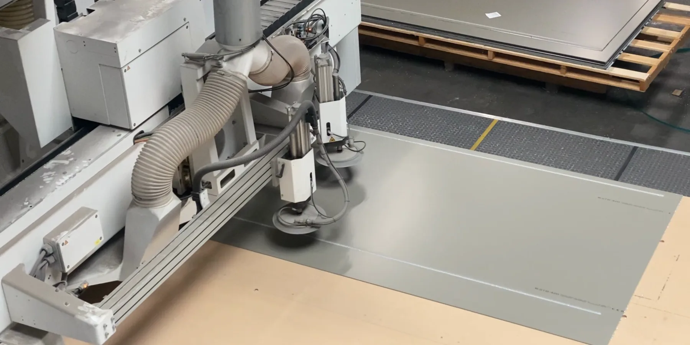

Bardage
de façade
Panneaux fibres-ciment, compact HPL, aluminium composite, laine de roche comprimée, bois et bois composite : la gamme complète, en stock et usinée sur mesure.


Fibre-ciment
Panneaux et clins en fibres-ciment pour des façades minérales, mates et durables.
- Panneaux plans, cassettes, bandeaux
- Fixation visible ou invisible (Tergo Design pour Equitone)
- Nouvelle gamme EQUITONE [inspira]


Aluminium composite
Panneaux composites aluminium, légers et précis, pour plans, cassettes et bandeaux.
- Cassettes CH (Stacbond) et M-BASE (Alpolic)
- Fixation visible ou invisible
- Pliage, perçage, fraisage, lettrage



Stratifié HPL
Compact HPL pour des façades très résistantes, aux décors variés.
- Eclip’s pour Fundermax, TS200 pour Trespa
- Fixation visible ou invisible
- Découpe, perçage, rainurage sur mesure

Laine de roche comprimée
Panneaux de laine de roche comprimée, pour des façades ventilées sobres et colorées.
- Fixations visibles ou invisibles
- Usinage en atelier
- Nombreuses couleurs
Bardage bois
Lames de bois pour des façades chaleureuses et naturelles.
- Pose en lames
- Accessoires de pose
- Ossature adaptée

Bois composite
Clins en bois composite, durables et faciles à entretenir.
- Pose en lames
- Accessoires de pose
- Ossature adaptée
Gamme complète (formats, couleurs, références) dans le catalogue 2026. Marques partenaires : Fundermax, Trespa, Equitone, Rockpanel, Stacbond, Alpolic, Fiberdeck, Neolife, Cedral, Haussermann, Gaiffe.
Visible
ou invisible.
Tout pour une installation optimale, avec des schémas explicatifs pour chaque système dans notre catalogue.
Vis, rivets, EPDM
- Fixation sur ossature : vis, rivets et rondelles EPDM
- Bardillons, mèches, forêts centreur, disques
- Riveteuse
Systèmes dédiés
- Tergo Design pour Equitone
- Eclip’s pour Fundermax
- TS200 pour Trespa
- Cassettes CH pour Stacbond
- Cassettes M-BASE pour Alpolic
Usinage
en atelier.
Coupe, perçage, fraisage, rainurage, lettrage : nous préparons les panneaux fibres-ciment, compact HPL, aluminium composite et laine de roche comprimée selon vos plans, pour gagner du temps de pose et baisser les taux de chute.
